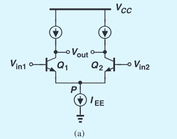

이상적 전류원 부하를 가진 바이폴라 차동쌍의 차동 이득
주어진 조건
- 이득을 최대로 하려고 이상적인 전류원을 사용함
- 소자 값은 주어지지 않음 (답은 소신호 파라미터 기호로)
구할 것
- 차동 이득 $\dfrac{v_{out1} - v_{out2}}{v_{in1} - v_{in2}}$

원문 보기
그림 10.18(a)에 보인 회로의 차동 이득을 계산하라. 이득을 최대로 하기 위해 이상적인 전류원이 사용되었다.
문제를 내 말로 읽어요
두 베이스의 차이를 넣고 두 컬렉터의 차이를 읽는 바이폴라 차동쌍이에요. 위쪽 전류원은 이상적이지만 입력 BJT의 Early 효과는 남아요.
이 문제를 봤을 때 떠올릴 개념과 공식
이상적 전류원 부하라는 단서에서 부하의 소신호 저항은 무한대라고 판단해요. 차동 모드(differential mode, DM)에서는 공통 이미터가 가상 접지라 각 반쪽이 공통 이미터(common emitter, CE) 단이에요. $g_m=I_C/V_T$는 전압을 전류로 바꾸는 비율, $r_O=V_A/I_C$는 Early 출력 저항이에요. 입력 소자의 $r_O$까지 버리면 출력 전압을 정할 부하가 사라져요.
종이에 쓸 실제 첫 줄
$v_{in1}=v_d/2$, $v_{in2}=-v_d/2$로 놓으면 대칭이라 $v_P=0$(가상 접지)이에요. $V_{CC}$는 교류 접지, 위 이상적 전류원과 $I_{EE}$는 소신호에서 개방이에요. 왼쪽 $Q_1$을 $r_\pi$, $g_mv_\pi$, $r_O$로 바꾸면 $v_\pi=v_{in1}-v_P=v_d/2$예요.
$v_{out1}$ 노드에서 아래($P$)로 나가는 전류를 양으로 잡아요. $r_O$로 $v_{out1}/r_O$, 제어 전류원으로 $g_mv_\pi$가 나가고, 위 전류원은 개방이라 들어오는 전류가 없어요.
$$\frac{v_{out1}}{r_O}+g_m\frac{v_d}{2}=0$$
왜 이렇게 푸는지 함께 따라가요
풀이
왼쪽 출력은 $v_{out1}=-g_mr_Ov_d/2$이고 오른쪽은 $v_{out2}=+g_mr_Ov_d/2$예요. 두 출력을 빼면 $$v_{out1}-v_{out2}=-g_mr_Ov_d$$ 따라서 $A_{DM}=-g_mr_O=-V_A/V_T$예요. 입력의 절반이 각 반쪽에 걸리는 효과와 두 출력의 차이를 취하는 효과가 상쇄돼요.
완성 답과 검산
검산
완성 답은 $A_{DM}=-g_mr_O$예요. $g_mr_O=(I_C/V_T)(V_A/I_C)=V_A/V_T$로 전류가 소거되고 S·Ω=1이에요. $V_A$를 두 배 키우면 출력 저항과 이득 크기도 두 배예요.
이 문항에서 하기 쉬운 오류
테일이 이상적이라는 이유로 입력 소자 Early 효과까지 지우지 않아요. 차동 입출력 이득에 추가로 1/2을 곱하지 않아요.
설명을 닫고 규칙을 적용해 봐요
- 같은 회로에서 한쪽 출력 $v_{out1}$만 읽으면 $v_{out1}/(v_{in1}-v_{in2})$는 얼마인가요? 반회로 입력이 $v_d/2$라는 점에서 출발해 보세요.
- 위 이상 전류원 대신 각 출력과 $V_{CC}$ 사이에 저항 $R_C=r_O$를 달면 차동 이득은 얼마인가요? 출력 노드 KCL에 어떤 가지가 하나 늘어나는지부터 정해 보세요.
- $V_A=5$ V, $V_T=25$ mV이면 이상 전류원 부하에서 $|A_{DM}|$은 얼마인가요? 바이어스 전류가 필요한지도 판단해 보세요.
이상적인 것은 부하 전류원이에요. 입력 BJT의 Early 출력저항은 남기고, 차동 입력·출력의 절반 인자가 상쇄되므로 1/2을 다시 곱하지 않아요.
개념
차동 하프 서킷·출력 저항
답
$\dfrac{v_{out1} - v_{out2}}{v_{in1} - v_{in2}} = -g_m r_O$
검산
$g_mr_O=V_A/V_T$라 바이어스 전류가 약분돼요.